Rastreamento server-side, vendas casadas com o clique e o lucro real de cada anúncio. Como instalar, para que serve cada tela, como conectar tudo e como a venda volta para a Meta, o GA4 e o Google Ads.
O Sinqfy junta num painel só quem visitou o seu site, quem comprou e quanto você gastou em anúncios na Meta. Depois devolve as vendas para a Meta pelo servidor, para os anúncios otimizarem com dado real.
O pixel do navegador perde cada vez mais informação: bloqueadores de anúncio, o Safari apagando cookies em poucos dias, o navegador do Instagram, o comprador que clica hoje e compra daqui a uma semana. O resultado é conhecido de quem anuncia:
O script roda em t.seudominio.com.br, num servidor da Cloudflare. O cookie é do seu domínio e reconhece a pessoa por até 400 dias, inclusive no iPhone.
O id do visitante vai no link do checkout e volta no webhook da plataforma. A venda fica ligada à campanha, ao conjunto e ao anúncio certos.
Faturamento aprovado, gasto da Meta, imposto, reembolsos e chargeback no mesmo painel. ROAS e CPA calculados com venda de verdade.
Cada evento e cada compra seguem pelo servidor para a Meta (Conversions API), o GA4 e o Google Ads, com reenvio automático, deduplicação e uma compra só por checkout.
Para gestor de tráfego, infoprodutor, e-commerce e agência. Cada funil é um site; um cliente pode ter vários, com equipe e permissões separadas. Tudo roda no seu servidor: os dados ficam no seu banco.
| Funciona com | Como |
|---|---|
| Hotmart, Kiwify, Eduzz | Webhook com parser próprio, rid em xcod ou sck |
| Shopify, WooCommerce, Stripe | Webhook com assinatura conferida |
| OnProfit e outras | Webhook personalizado: você diz onde está cada campo do JSON |
| Planilha e Pix próprio | Google Sheets a cada 5 minutos, ou checkout com Pix na sua chave |
O Sinqfy é instalado por você, num servidor seu. Ele não depende de um provedor: precisa de uma máquina Linux com Docker, de um endereço com HTTPS e, se quiser o cookie de 400 dias, de uma borda no seu domínio.
| Peça | O que é | Exemplos |
|---|---|---|
| Servidor | Uma máquina Linux com Docker, ligada 24 horas | Oracle Cloud (Always Free), Hetzner, DigitalOcean, Contabo, Hostinger, Magalu Cloud, um computador seu |
| HTTPS | Como o painel chega à internet | Túnel da Cloudflare, Caddy ou o Nginx que você já usa |
| Borda | Serve o script no seu domínio e grava o cookie de 400 dias (opcional) | Cloudflare Workers |
1 vCPU, 1 GB de memória e 10 GB de disco, x86 ou ARM.
Ubuntu 24.04, 2 vCPU, 2 GB de memória e 25 GB de disco.
PostgreSQL na mesma máquina, dentro do Docker, ou um banco gerenciado pelo DATABASE_URL.
COMPOSE_PROFILES | Como funciona | Portas abertas |
|---|---|---|
cloudflare | Um túnel sai da VPS para a Cloudflare, que entrega o HTTPS. O mais seguro | Nenhuma (só SSH) |
caddy | O Caddy pede e renova o certificado Let's Encrypt sozinho, em qualquer DNS | 80 e 443 |
| (vazio) | O painel fica em 127.0.0.1:8080, atrás do seu proxy | As do seu proxy |
curl -fsSL https://get.docker.com | sudo sh e sudo usermod -aG docker $USER. Saia e entre de novo.git clone https://github.com/igs-wbr/sinqfy.git && cd sinqfy/deploy.cp .env.example .env e preencha: senha do banco, chave dos dados pessoais (DATA_KEY), segredos e o jeito de publicar.docker compose up -d --build e espere "Sinqfy rodando" em docker compose logs -f app.deploy/backup.sh faz um pg_dump cifrado e manda para qualquer armazenamento do rclone (R2, B2, S3, Object Storage).rid.Do clique no anúncio até a compra voltar para a Meta, em seis passos. Cada número do diagrama é explicado logo abaixo.
t.seudominio, um Worker da Cloudflare. Ele grava pelo servidor os cookies _rid, _fbp e _fbc no seu domínio e repassa o evento ao painel com uma senha só dele (o EDGE_SECRET).rid) no link do checkout.t. no seu domínioCookie criado por JavaScript dura 7 dias no Safari, e às vezes só 24 horas. Cookie criado pelo servidor do próprio domínio do site dura até 400 dias. Por isso o rastreamento roda em t.seudominio.com.br, que é parte do seu domínio, e não num endereço do Sinqfy.
_ridO id do visitante. É o que liga visitas de dias diferentes e a venda ao clique.
_fbpO id de navegador que a Meta usa. Melhora a qualidade da correspondência dos eventos.
_fbcGuarda o fbclid do clique no anúncio. Diz à Meta exatamente qual clique converteu.
| Evento | Quando |
|---|---|
| PageView | Cada página aberta, inclusive em sites de uma página só (troca de rota) |
| InitiateCheckout | Clique num link de checkout conhecido (Hotmart, Kiwify, Eduzz, OnProfit, Stripe, pay., checkout...). Cliques repetidos em menos de 2 segundos contam uma vez |
| Lead | Envio de formulário com e-mail ou telefone (o dado vai cifrado para o CRM, nunca para o evento) |
| video_25 a video_100 | Quanto do vídeo da página foi assistido (recurso Retenção de vídeo) |
| Eventos seus | Qualquer botão com data-rastro="nome" ou a chamada rastro('nome') |
Quem compra o produto principal, o order bump e o upsell fez uma compra. O Sinqfy segura o Purchase por 5 minutos na fila e soma no mesmo evento tudo o que a mesma pessoa comprar nesse tempo. A Meta recebe uma conversão com o valor total, em vez de três conversões separadas.
| Pedido | Valor | O que vai para a Meta |
|---|---|---|
| Edição com IA | R$ 67 | 1 Purchase de R$ 311, com os três produtos e os três pedidos |
| Order bump | R$ 47 | |
| Upsell | R$ 197 |
No Google Ads vale a mesma regra, com 5 minutos de espera. No painel, cada pedido continua aparecendo separado, com o seu valor. A soma é só para as plataformas de anúncio.
UTM é um pedaço de texto no fim do link que diz de onde a pessoa veio. O nome vem de Urchin Tracking Module, a ferramenta que deu origem ao Google Analytics. Hoje é o padrão de todo o mercado.
Um link com UTMs fica assim. Cada parte depois do ? é um par nome=valor, separado por &:
Azul: o nome da UTM. Verde: o valor legível. Amarelo: o id da Meta depois da barra vertical.
| UTM | Responde | No Sinqfy, guarde | Exemplo |
|---|---|---|---|
utm_source | De onde veio | A origem do tráfego | FB, google, instagram |
utm_campaign | Qual campanha | Nome e id da campanha | {{campaign.name}}|{{campaign.id}} |
utm_medium | Qual público ou meio | Nome e id do conjunto de anúncios | {{adset.name}}|{{adset.id}} |
utm_content | Qual criativo | Nome e id do anúncio | {{ad.name}}|{{ad.id}} |
utm_term | Onde apareceu | O posicionamento | {{placement}} |
No Gerenciador de Anúncios, em cada anúncio, abra Rastreamento → Parâmetros de URL e cole a linha abaixo. A Meta troca cada {{...}} pelo valor real na hora do clique.
utm_source=FB&utm_campaign={{campaign.name}}|{{campaign.id}}&utm_medium={{adset.name}}|{{adset.id}}&utm_content={{ad.name}}|{{ad.id}}&utm_term={{placement}}
| para ligar cada venda à campanha, ao conjunto e ao anúncio certos, e cruzar com o gasto que vem da Meta. Sem o id, a venda cai em "sem campanha".utm_medium é o conjunto e utm_content é o anúncio.utm_source=instagram&utm_medium=bio&utm_campaign=lancamento.utm_source para src e utm_campaign para sck, que são os campos que ela devolve.A plataforma de venda não sabe de qual anúncio a pessoa veio. O Sinqfy resolve isso levando um id no link do checkout e lendo esse id de volta no webhook.
| Origem | Como | Confiança |
|---|---|---|
| Clique (rid) | O rid voltou no webhook. A venda herda UTMs, fbc, fbp, navegador e página da última visita com campanha | a melhor |
| Lead | O e-mail ou telefone do comprador bate com um lead do CRM que tem origem | boa |
| UTM | A plataforma devolveu as UTMs do link | média |
| Sem origem | Nada disso: a venda entra no faturamento, mas sem campanha | nenhuma |
| Plataforma | Campo |
|---|---|
| Hotmart | xcod |
| Kiwify e OnProfit | sck |
| Stripe | client_reference_id |
| Shopify | rid na página de entrada (landing_site) |
| Genérico e personalizado | O campo que você indicar no mapa |
Último toque: o anúncio que trouxe a pessoa na visita da compra. É o que vai para ROAS e CPA.
Primeiro toque pago: o anúncio que trouxe a pessoa pela primeira vez, até 30 dias antes.
O anúncio apareceu em alguma visita da mesma pessoa nos 30 dias antes da compra.
Todo evento do site e toda compra aprovada vão para a Meta pela Conversions API, com reenvio automático se a Meta estiver instável. E-mail e telefone seguem só em SHA-256, um código que não dá para desfazer.
eventID do servidor, e a Meta conta uma vez.Quanto mais dados do comprador a Meta recebe, melhor ela encontra a pessoa que clicou. Tudo que identifica alguém vai em SHA-256.
| Dado | De onde vem |
|---|---|
| fbc, fbp e navegador | Da visita casada com a venda pelo rid |
| IP, cidade e UF | Do clique no checkout, guardados cifrados até a compra ou por no máximo 7 dias |
| Nome, cidade, UF, CEP e país | Do webhook, quando a plataforma manda o endereço (Hotmart, Kiwify, webhook personalizado) |
| UF pelo DDD | Quando a venda vem sem endereço e sem o local do clique, a UF sai do DDD do celular brasileiro |
| E-mail e telefone | Do webhook ou do lead do CRM com o mesmo rid |
gclid, gbraid ou wbraid do visitante nos 90 dias anteriores, e e-mail e telefone em SHA-256.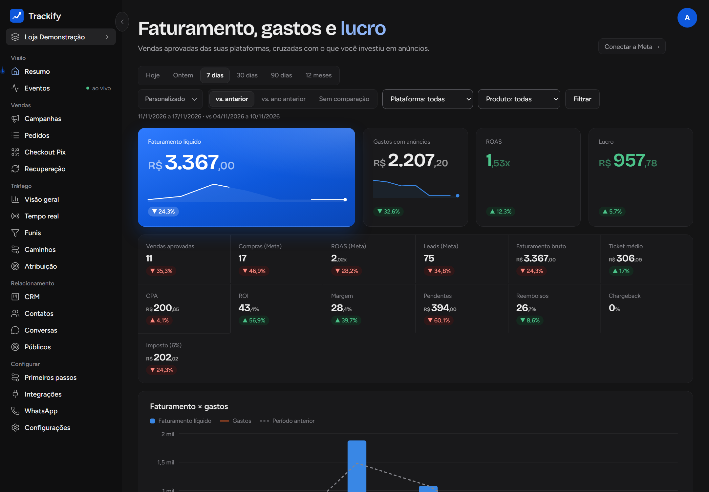
A primeira tela responde se a operação está dando lucro. O cartão azul é o faturamento líquido; ao lado, gasto com anúncios, ROAS e lucro. A faixa de baixo detalha: vendas aprovadas, compras e ROAS que a própria Meta reporta, ticket médio, CPA, margem, pendentes, reembolsos, chargeback e imposto.
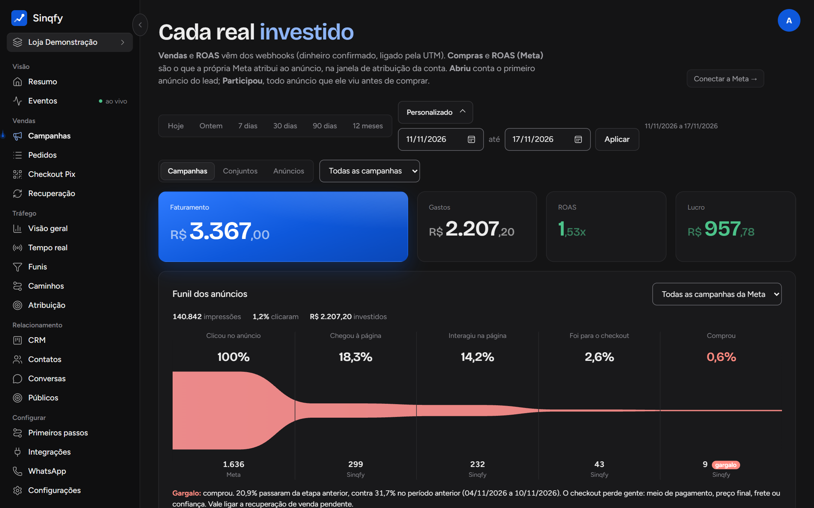
Cada campanha, conjunto e anúncio com gasto, vendas reais, ROAS real e o que a Meta reporta lado a lado. O funil mostra impressões, cliques, visitas à página, checkouts e compras, cada etapa pela fonte mais confiável: impressão e clique pela Meta, página pelo script, compra pelo webhook. O gargalo é a etapa que mais caiu contra o período anterior da própria campanha, nunca uma média de mercado.
As colunas Vendas, Abriu e Participou mostram o último toque, o primeiro toque e a participação de cada anúncio.
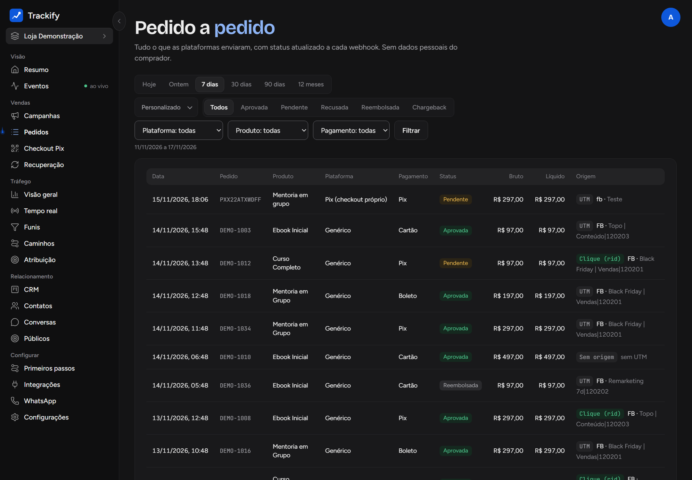
Cada pedido com status (aprovada, pendente, recusada, reembolsada, chargeback), valor, forma de pagamento, produto e a origem: clique (rid), lead, UTM ou sem origem. É aqui que você confere se as vendas estão chegando e casando com os anúncios.
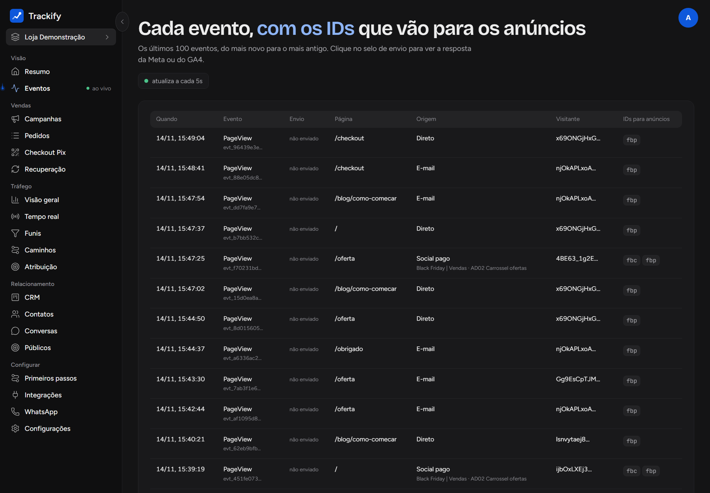
Use para conferir a instalação. Cada linha mostra o evento, a página, a origem e os IDs que vão para os anúncios (fbc, fbp, gclid). Clique no selo de envio para ver a resposta da Meta.
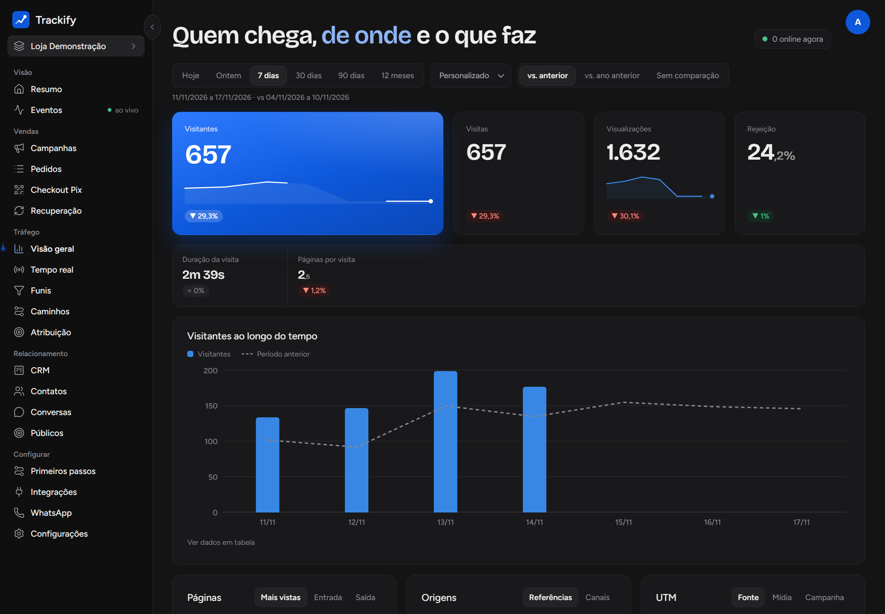
Visitantes, visitas, duração e páginas por visita, com fontes, campanhas, páginas de entrada, países e dispositivos. Clique em qualquer linha para filtrar a tela inteira. O cartão de navegador mostra quanto do tráfego vem de dentro do Instagram, Facebook ou TikTok e quanto desse público chega ao checkout. O cartão Primeira visita ou retorno mostra em qual visita as pessoas compram.
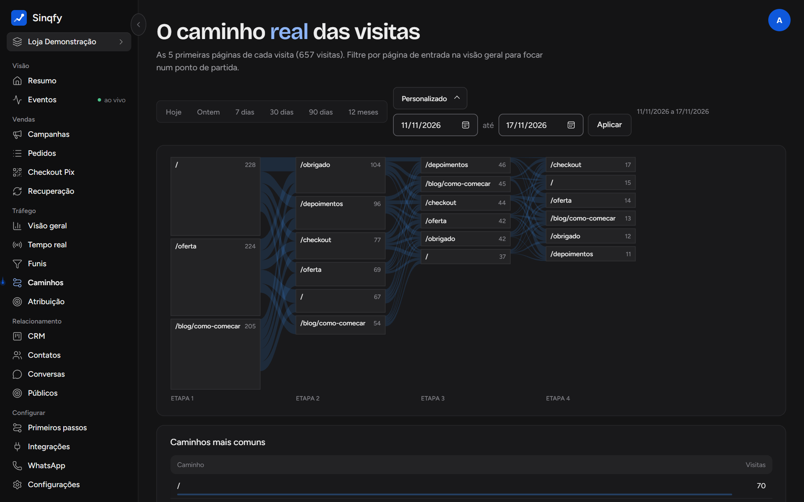
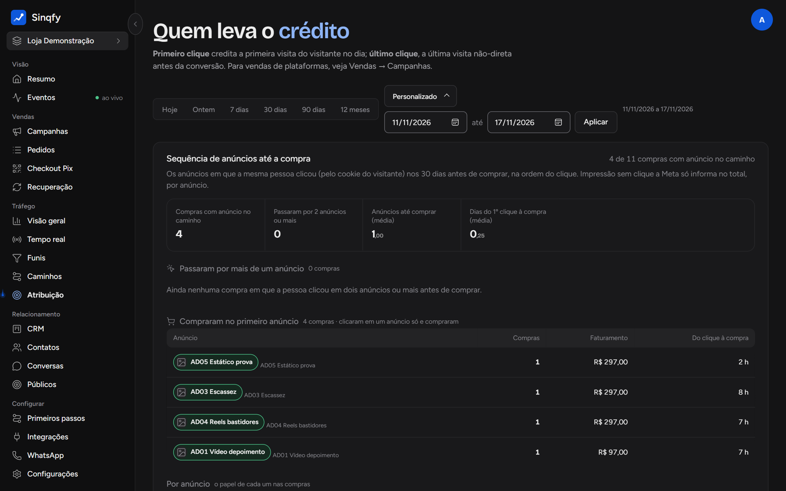
| Tela | Para que serve |
|---|---|
| Tempo real | Quem está no site nos últimos 5 minutos. Bom para lançamento e live |
| Funis | Em qual etapa as pessoas desistem. Monte com páginas (/checkout) ou eventos (evento:Lead) |
| Caminhos | O trajeto real das visitas, página a página |
| Comportamento | Até onde leem cada página, quanto tempo ficam com a aba aberta, onde clicam (mapa de calor e links e botões mais clicados) e quem volta em 1, 7 e 30 dias |
| Atribuição | Quem leva o crédito pela conversão: primeiro ou último clique |
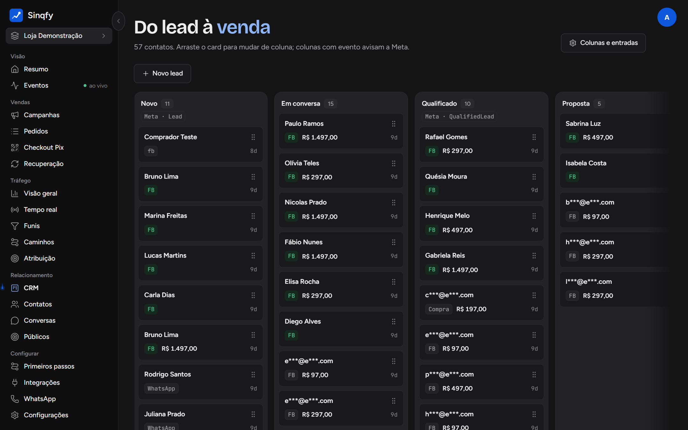
Quadro com Novo, Em conversa, Qualificado, Proposta, Ganhou e Perdeu. Arraste o card de coluna; as colunas com evento (por exemplo, Ganhou manda Purchase) avisam a Meta, para ela aprender quem vira cliente de verdade. Nome, e-mail e telefone ficam cifrados. Ao lado ficam Contatos (lista e ficha com a linha do tempo), Conversas (WhatsApp ligado ao anúncio) e Públicos (CSV em hash para remarketing).
O painel abre como app no celular: adicione à tela inicial pelo navegador. A barra de baixo leva ao Resumo, Tráfego, CRM e Conversas, e os números se ajustam à tela pequena.
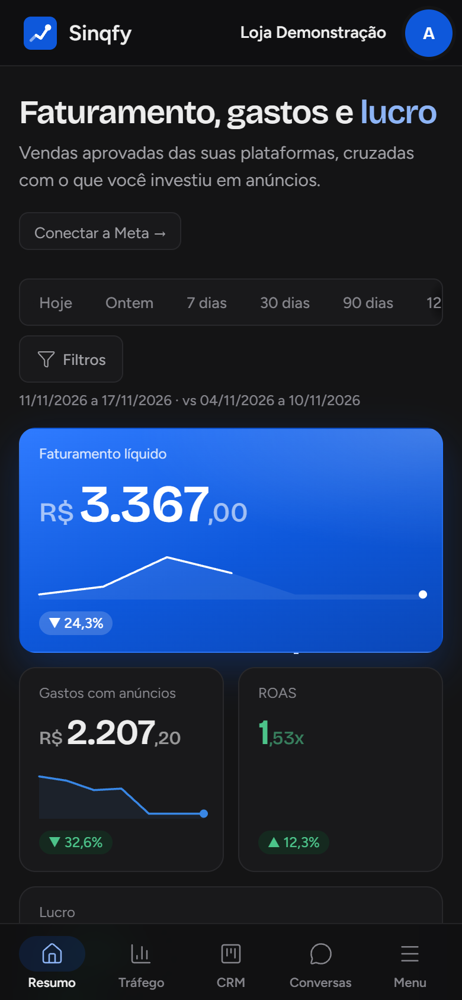
Em Configurações → Recursos, cada site liga só o que usa. Recurso desligado some do menu.
| Recurso | O que faz |
|---|---|
| Checkout com Pix | Página de pagamento própria com Pix copia e cola na sua chave, sem intermediador |
| Recuperação | Sequência no WhatsApp para quem gerou boleto ou Pix e não pagou. Para sozinha quando o pagamento chega ou a pessoa responde |
| Públicos | CSV com e-mail e telefone em SHA-256 de compradores, de quem não pagou e de cada coluna do CRM, para subir na Meta |
| Retenção de vídeo | Eventos video_25 a video_100 dos vídeos do site, para usar nos funis |
| Robô no WhatsApp | Responde quando a mensagem recebida tem uma palavra-chave |
A tela Primeiros passos conduz a configuração em 6 passos e confere cada um sozinha. Este capítulo explica o que acontece em cada passo e o que preencher em cada integração.
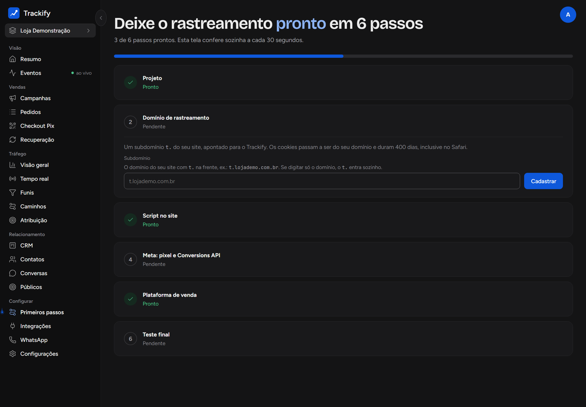
t. passa a servir o script e gravar os cookies (veja o capítulo 9 se o domínio estiver em outra conta da Cloudflare).<head> de todas as páginas. O passo fica verde no primeiro evento.Uma linha no <head> de todas as páginas do site, inclusive páginas de obrigado e de upsell. Copie a sua em Integrações → Rastreamento no site.
<script defer data-site="id-do-site" src="https://t.seudominio.com.br/s.js"></script>
| Opção | O que faz |
|---|---|
data-consent="required" | Nada de cookie nem envio a terceiros até o banner chamar rastro('consent') |
data-pixel="mirror" | Repete cada evento no Pixel do navegador com o mesmo eventID. Tire o fbq('track','PageView') do código base |
data-rastro="nome" | Em qualquer botão ou link: registra o evento nome no clique |
rastro('nome', {...}, valor) | Registra um evento pelo seu código, com propriedades e valor |
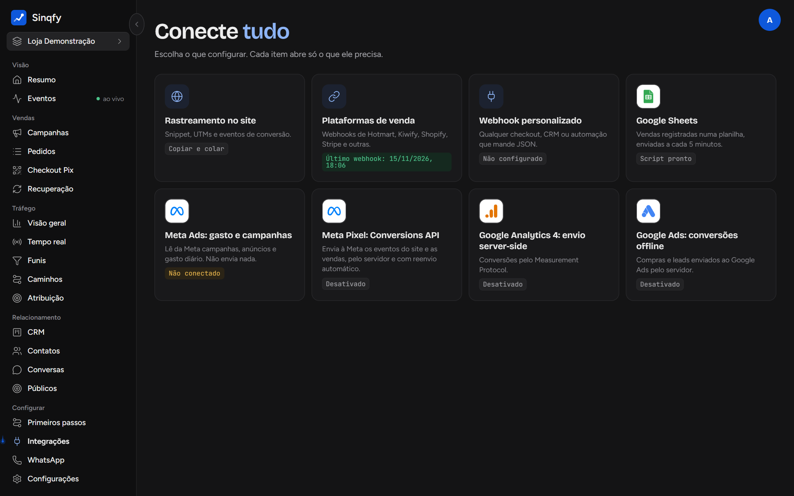
lê da Meta
Importa campanhas, conjuntos, anúncios, status, orçamento e gasto diário a cada 5 minutos (90 dias na primeira vez). Precisa do id da conta (act_...) e de um token com a permissão ads_read, de preferência de um usuário do sistema no Business Manager. Somente leitura: o Sinqfy nunca altera anúncios.
envia para a Meta
Envia os eventos do site e as vendas pelo servidor. Precisa do id do pixel (conjunto de dados) e do token da Conversions API, gerado no Gerenciador de Eventos. O código de teste opcional faz os eventos aparecerem só na aba Testar eventos.
evento = ID da ação. Compras usam Purchase.Uma ação de conversão recebe um evento só: o mapa recusa o mesmo ID em dois eventos.
Em Integrações → Plataformas de venda há uma URL de webhook para cada plataforma. Cadastre a URL na plataforma com os eventos de compra aprovada, pendente, reembolso e chargeback. O token na URL identifica o site; a URL de uma plataforma não serve para outra.
| Plataforma | Onde cadastrar | Assinatura |
|---|---|---|
| Hotmart | Ferramentas → Webhook (versão 2.0) | Hottok, conferido pelo Sinqfy |
| Kiwify | Apps → Webhooks | Token na URL |
| Eduzz | Webhook novo ou legado | Token na URL |
| Shopify | Configurações → Notificações → Webhooks | Segredo do webhook |
| WooCommerce | Configurações → Avançado → Webhooks | Segredo do webhook |
| Stripe | Developers → Webhooks | Segredo de assinatura (whsec_) |
Para qualquer checkout que mande JSON, diga onde está cada campo. Caminhos com ponto, como customer.email ou product.name. Além dos campos do pedido, dá para mapear nome, sobrenome, cidade, UF, CEP e país do comprador, que melhoram a correspondência na Meta. Teste com um exemplo antes de salvar.
| Campo do Sinqfy | Na OnProfit (payload V2) |
|---|---|
| Id do pedido | id |
| Status | status (Aprovada: paid,authorized; Pendente: waiting; Reembolsada: refunded) |
| Valor pago | price, em centavos. Não use transactions.0.amount: no Pix com order bump ele traz o total do pagamento em cada pedido |
| Valor líquido | comission, em centavos (assim mesmo, com um "m") |
| Forma de pagamento | payment_type |
| Produto | product.name |
| E-mail e telefone | customer.email, customer.cell |
| Sobrenome e país | customer.lastname (somado ao nome) e customer_address.country ("Brasil" por extenso vira BR) |
| Id do visitante (rid) | sck |
| UTMs | utm_source a utm_term, na raiz |
G-...) e segredo da API do Measurement Protocol. Conversões vão na mesma sessão do navegador; as visitas continuam com o gtag do site./w/nome que levam o código do clique para a conversa, e a Cloud API oficial para ligar cada contato ao anúncio.Uma instalação do Sinqfy atende várias agências, e cada agência atende vários clientes. Cada funil é um site, com script, webhook, pixel e painel próprios.
Cada agência tem equipe, papéis e sites próprios. Ninguém de uma agência vê os sites de outra.
Lançamento, perpétuo e produto físico do mesmo cliente ficam em sites separados, cada um com os seus números.
Marque o mesmo cliente nos sites dele e o seletor agrupa tudo. A visão somada mostra Resumo, Campanhas e Pedidos de todos os funis, e o pedido que chegou a dois sites conta uma vez.
Uma conta de anúncio para vários funis? Cada site recebe as campanhas cujo nome contém o trecho da regra dele, com conjuntos e anúncios.
Cada cliente precisa do próprio t.dominiodocliente, para o cookie ser do domínio dele. Quando o domínio do cliente está em outra conta da Cloudflare (ou em qualquer outro DNS), ele só aponta um registro para a sua instalação. Quem cuida do certificado e do tráfego é o Cloudflare for SaaS da sua conta.
AAAA edge 100:: com proxy ligado (nuvem laranja). É só um endereço para a Cloudflare receber o tráfego; quem responde é o Worker.edge.seudominio.com.br. Espere o status Active..env da VPS: CF_API_TOKEN, CF_ZONE_ID e CF_SAAS_TARGET=edge.seudominio.com.br. Reinicie o app.t.cliente.com.br/*, na sua zona). Evite a rota coringa */* se o seu domínio tiver outros sites na Cloudflare: ela faria o Worker responder por eles também.t.cliente.com.br no Cloudflare for SaaS sozinha.t → edge.seudominio.com.br, proxy desligado. Se o DNS dele também é Cloudflare, a nuvem tem de ficar cinza; laranja dá o erro 1014.src="https://t.cliente.com.br/s.js" e siga os demais passos.t.cliente.com.br, com ORIGIN apontando para o seu painel e o mesmo EDGE_SECRET. Funciona, mas cada cliente vira um Worker para manter. O Cloudflare for SaaS centraliza tudo na sua conta.| Métrica | Conta |
|---|---|
| Faturamento bruto | Soma do valor pago das vendas aprovadas no período |
| Faturamento líquido | O que sobra para você depois das taxas da plataforma |
| Gastos com anúncios | Gasto diário importado da Meta, por anúncio |
| ROAS | Faturamento líquido dividido pelo gasto. ROAS 3 = cada R$ 1 voltou R$ 3 |
| CPA | Gasto dividido pelo número de vendas aprovadas |
| Lucro | Faturamento líquido menos gastos e imposto |
| ROI e Margem | Lucro sobre o gasto, e lucro sobre o faturamento |
| Ticket médio | Faturamento dividido pelo número de vendas |
| Compras e ROAS (Meta) | O que a própria Meta diz que vendeu. Comparar com as vendas reais mostra se ela atribui a mais |
| Imposto | Percentual configurável (ex.: 6% no Simples), descontado do lucro |
| Palavra | O que é |
|---|---|
| Site | Um projeto: um domínio, um checkout, uma conta de anúncios |
| Visitante e visita | Uma pessoa; uma sequência de páginas sem pausa maior que 30 minutos |
| Evento | Qualquer coisa registrada: página, lead, clique em comprar, vídeo |
| rid | O id do visitante que vai no link do checkout e volta no webhook |
| Webhook | O aviso automático que a plataforma manda ("o pedido 123 foi pago") |
| Pixel | O conjunto de dados da Meta que recebe os eventos |
| Conversions API | O envio de eventos para a Meta pelo servidor, sem depender do navegador |
| fbc e fbp | Os ids do clique e do navegador que a Meta usa para casar o evento com a pessoa |
| Worker | O programa da Cloudflare que roda em t.seudominio |
DATA_KEY, que fica fora do banco.data-consent="required", nada de cookie ou dado pessoal sai antes do aceite no banner.ads_read.| Papel | Pode |
|---|---|
| Dono | Tudo na agência: sites, equipe, integrações, exclusão |
| Gestor | Ver e configurar os sites liberados para ele |
| Cliente | Só ver os sites liberados, sem mudar nada |
grátis, para sempre
em breve
Sem o Pro, nada se perde: os sites além do primeiro continuam coletando visitas, recebendo vendas e enviando conversões. Só o painel deles fica fechado.
O código segue a Fair Core License 1.0 com MIT futura (FCL-1.0-MIT):
O Sinqfy nasceu de uma pergunta simples que todo anunciante faz e quase nenhuma ferramenta responde direito: qual anúncio vendeu de verdade, e quanto sobrou no fim do mês?
Ele foi pensado, desenhado e construído por mim, Iegos Weber, para juntar rastreamento server-side, vendas casadas com o clique e o lucro real num painel só, rápido e honesto com os números. Se você tem uma dúvida, uma ideia ou quer usar o Sinqfy na sua operação ou agência, fale comigo.
Sinqfy · o guia completo · edição de novembro de 2026. Telas da loja de demonstração; os números são fictícios.